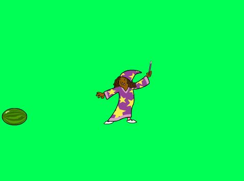
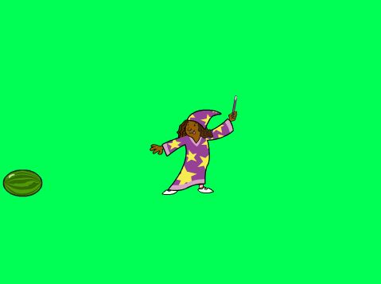
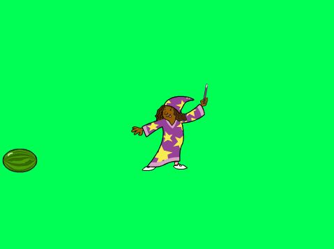
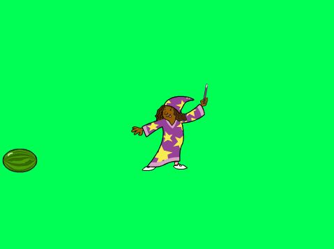

-The purpose of Drake v. Nicki is to accomplish the highest score possible and attack all threats of Nicki Minaj and Meek Mill. Avoid the spike bar at the bottom and score the highest possible points.
-Some incremental and iterative processes that were used was the random actions of the repelling drake sprite and the random placements of all the Meek Mill and Nicki Minaj sprites.
-Some difficulties were the help menu and getting the menu to appear and disappear when needed. It was resolved by inserting a “When I recieve, Hide sprites” code in all the necessary pages and a “When I recieve, Show Sprites” code.